철도신호기사 (2014-03-02 기출문제)
1과목: 전자공학
1. 6개의 플립플롭으로 구성된 상향계수기(upcounter)의 모듈러스와 이 계수기로 계수할 수 있는 최대계수는?
- 모듈러스 : 5, 최대계수 : 63
- 모듈러스 : 6, 최대계수 : 64
- 모듈러스 : 63, 최대계수 : 64
- 모듈러스 : 64, 최대계수 : 63
(정답률: 75%)

2. 필터를 이용하여 DSB파에서 SSB파를 얻어내려면 어떤 종류의 필터를 사용해야 하는가?
- 저역필터(LPF)
- 전대역필터(APF)
- 고역필터(HPF)
- 대역필터(BPF)
(정답률: 74%)
3. 다음 중 논리식 (A+B)(A+C)+AC를 간략화 하면?
- A+B
- A+BC
- A+B+C
- AB+AC
(정답률: 77%)
4. AM변조에서 100% 변조인 경우 그 변조 출력 전력이 6[kW]일 때, 반송파 성분의 전력 [kW]은?
- 1
- 1.5
- 2
- 4
(정답률: 63%)
5. 변조신호 주파수 400Hz, 전압 3V로 주파수를 변조 했을 때 변조지수가 50이었다. 이 때 최대주파수 편이[kHz]는?
- 20
- 40
- 80
- 100
(정답률: 86%)
6. 1024개의 입력 펄스가 들어올 때마다 한 개의 출력 펄스를 발생시키려고 한다. T 플립플롭을 이용할 경우 몇 개의 플립플롭이 필요한가?
- 4
- 6
- 8
- 10
(정답률: 91%)
7. 이상적인 연산증폭기(Op-Amp)의 특징이 아닌 것은?
- 입력임피던스가 무한대이다.
- 전압이득이 무한대이다.
- 출력 임피던스가 무한대이다.
- 대역폭이 무한대이다.
(정답률: 81%)
8. 다음 중 그림과 같은 다이오드 회로에서 입력이 Vi=10√2sin(100t)[V]일 때, 출력 전압(Vo)의 최고치는?
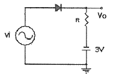
- 약 14.14[V]
- 약 10[V]
- 약 3[V]
- 약 -3[V]
(정답률: 75%)
9. 그림의 회로에서 V1=3[V], Rf=450[kΩ], R1=150[kΩ]일 때 출력전압 Vo[V]는?
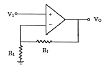
- 1[V]
- 12[V]
- 15[V]
- 18[V]
(정답률: 89%)
10. 10진수 4에 해당하는 그레이코드(gray code)는?
- 0100
- 0111
- 1000
- 0110
(정답률: 78%)
11. JK Flip-flop에서 Jn=1, Kn=0일 때 클록이 인가되면 Qn+1의 출력상태는?
- 부정
- 0
- 1
- 반전
(정답률: 87%)
12. PLL(Phase Locked Loop)의 주요 구성이 아닌 것은?
- 위상검출기
- 인코더
- VCD(Voltage Controlled Oscillstor)
- LPF(Low Pass Filter)
(정답률: 74%)
13. JK플립플롭의 JK입력을 묶어서 하나의 입력신호를 이용하는 플립플롭은?
- D플립플롭
- J플립플롭
- K플립플롭
- T플립플롭
(정답률: 75%)
14. 이득이 100인 저주파 증폭기가 10%의 왜율을 가지고 있다. 이것을 1% 개선하기 위해서는 얼마의 전압부 궤환을 걸어 주어야 하는가?
- 0.01
- 0.09
- 99
- 100
(정답률: 64%)
15. 그림과 같은 회로에서 Vo는 몇 [V]인가?
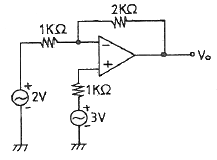
- 3[V]
- 4[V]
- 5[V]
- 6[V]
(정답률: 90%)
16. 진폭변조에서 신호파 xs(t)=cos2πfst이고, 반송파 xc(t)=2cos2πfct로 주어질 때 변조도는?
- 20[%]
- 50[%]
- 80[%]
- 100[%]
(정답률: 85%)
17. 병렬공진회로에서 공진주파수 fo의 관계식으로 맞는 것은?
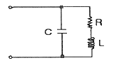
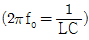
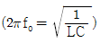
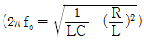
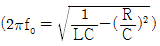
(정답률: 65%)
18. 부울 대수의 공식이 성립하지 않는 식은?
- (A+B)+C=A+(B+C)
- (A*B)*C=A*(B*C)
- A+(B*C)=(A+B)*(A+C)
- A+A=0
(정답률: 92%)
19. C1=C2=0.01[㎌]이고, R1=R2=2[kΩ]일 때 발진주파수는 약 몇 [kHz]인가?
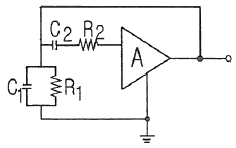
- 3.25
- 7.96
- 50.32
- 56.27
(정답률: 61%)
20. 50[kHz]의 2 Decade 높은 주파수는?
- 50[kHz]
- 100[kHz]
- 500[kHz]
- 5[MHz]
(정답률: 73%)
2과목: 회로이론 및 제어공학
21. RLC 직렬 공진회로에서 제3고조파의 공진주파수 f(Hz)는?
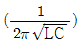
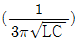
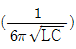
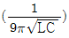
(정답률: 85%)
22. RLC 직렬회로에 e=170cos(120t+π/6)V를 인가할 때 i= 8.5cos(120t-π/6)A가 흐르는 경우 소비되는 전력은 약 몇 W인가?
- 361
- 623
- 720
- 1445
(정답률: 62%)
23. 세변의 저항 Ra=Rb=Rc=15Ω인 Y결선 회로가 있다. 이것과 등가인 △결선 회로의 각 변의 저항(Ω)은?
- 135
- 45
- 15
- 5
(정답률: 79%)
24. f(t)=3t2의 라플라스 변환은?
- 3/s3
- 3/s2
- 6/s3
- 6/s2
(정답률: 79%)
25. 다음과 같은 회로에서 t=0+에서 스위치 K를 닫았다. i1(0+), i2(0+)는 얼마인가? (단, C는 초기전압과 L의 초기전류는 0이다.)
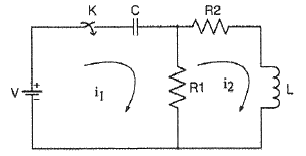
- i1(0+)=0, i2(0+)=V/R2
- i1(0+)=V/R1, i2(0+)=0
- i1(0+)=0, i2(0+)=0
- i1(0+)=V/R1, i2(0+)V/R2
(정답률: 64%)
26. 모든 초기값을 0으로 할 때, 입력에 대한 출력의 비는?
- 전달함수
- 충격함수
- 경사함수
- 포물선함수
(정답률: 80%)
27. 그림과 같은 회로에서 저항 0.2Ω에 흐르는 전류는 몇 A인가?
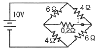
- 0.4
- -0.4
- 0.2
- -0.2
(정답률: 55%)
28. 어떤 2단자 회로에 단위 임펄스 전압을 가할 때 2e-t+3e-t(A)의 전류가 흘렀다. 이를 회로로 구성하면? (단, 각 소자의 단위는 기본 단위로 한다.)
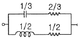
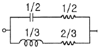
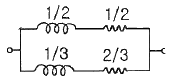
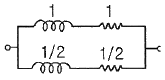
(정답률: 53%)
29. 그림과 같은 T형 회로에서 4단자정수 중 D 값은?
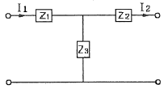
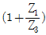
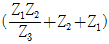
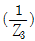
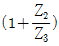
(정답률: 87%)
30. 분포정수 선로에서 위상정수를 β(rad/m)라 할 때 파장은?
- 2πβ
- 2π/β
- 4πβ
- 4π/β
(정답률: 78%)
31. Routh 안정도 판별법에 의한 방법 중 불안정한 제어계의 특성 방정식은?
- s3+2s2+3s+4=0
- s3+s2+5s+4=0
- s3+4s2+5s+2=0
- s3+3s2+2s+10=0
(정답률: 50%)
32. 어떤 제어계에 단위 계단입력을 가하였더니 출력이 1-e-2t로 나타났다. 이 계의 전달함수는?
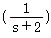
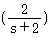
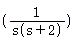
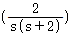
(정답률: 30%)
33. 다음 중 Z변환함수
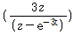
에 대응되는 라플라스 변환 함수는?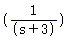
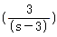
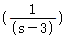
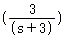
(정답률: 61%)
34. 그림과 같은 블록선도에서 C(s)/R(s)의 값은?
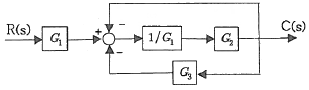
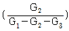
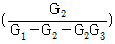
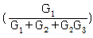
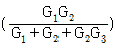
(정답률: 75%)
35. 다음 과도응답에 관한 설명 중 틀린 것은?
- 지연 시간은 응답이 최초로 목표값의 50%가 되는데 소요되는 시간이다.
- 백분율 오버슈트는 최종 목표값과 최대 오버슈트와의 비를 %로 나타낸 것이다.
- 감쇠비는 최종 목표값과 최대 오버슈트와의 비를 나타낸 것이다.
- 응답시간은 응답이 요구하는 오차 이내로 정착되는데 걸리는 시간이다.
(정답률: 72%)
36. 이득이 K인 시스템의 근궤적을 그리고자 한다. 다음 중 잘못된 것은?
- 근궤적의 가지수는 극(Pole)의 수와 같다.
- 근궤적은 K=0일 때 극에서 출발하고 K=∞일 때 영점에 도착한다.
- 실수축에서 이득 K가 최대가 되게 하는 점이 이탈점이 될수 있다.
- 근궤적은 실수축에 대칭이다.
(정답률: 75%)
37. 단위계단 입력신호에 대한 과도응답은?
- 임펄스응답
- 인디셜응답
- 노멀응답
- 램프응답
(정답률: 56%)
38. 다음과 같은 진리표를 갖는 회로의 종류는?
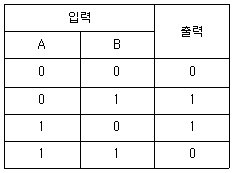
- AND
- NAND
- NOR
- EX-OR
(정답률: 67%)
39. 그림과 같은 RC회로에 단위 계단전압을 가하면 출력전압은?
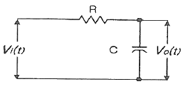
- 아무 전압도 나타나지 않는다.
- 처음부터 계단전압이 나타난다.
- 계단전압에서 지수적으로 감쇠한다.
- 0부터 상승하여 계단전압에 이른다.
(정답률: 64%)
40. 자동제어의 분류에서 엘리베이터의 자동제어에 해당하는 제어는?
- 추종 제어
- 프로그램 제어
- 정치 제어
- 비율 제어
(정답률: 67%)
3과목: 신호기기
41. 60Hz, 24극 14400W의 3상 유도전동기가 슬립 4%로 운전될 때, 2차 동손이 600W이다. 이 전동기의 전부하시의 토크는 약 몇 kg·m 인가?
- 32.25
- 45.95
- 48.75
- 52.15
(정답률: 82%)
42. 철도신호에 사용하는 시소계전기의 보류쇄정 또는 접근쇄정 시소의 허용한도는 지정시소의 몇 %이내로 유지하여야 하는가?
- ± 5
- ± 10
- ± 15
- ± 20
(정답률: 70%)
43. 건널목 전동차단기의 전동기에 대한 설명으로 틀린 것은?
- 정격 전압은 DC 24[V]용으로 사용한다.
- 전동기의 기동 전류는 4.5[A] 이하이다.
- 전동기의 운전 전류는 3.6[A] 이하이다.
- 전동기의 활(slip)전류는 7[A] 이하이다.
(정답률: 87%)
44. 다음 전력용 반도체 소자 중 사이리스터에 속하지 않는 것은?
- SCR
- Diode
- Triac
- SUS
(정답률: 83%)
45. 3상 유도 전동기의 토크-속도곡선이 비례추이 한다는 것은 그 곡선이 무엇에 비례하여 이동하는 것을 의미하는가?
- 슬립
- 회전수
- 공급전압
- 2차 합성 저항
(정답률: 75%)
46. 전기선로전환기 전환 중 콘덴서 회로가 단선된 경우 전동기의 동작 상태는?
- 정지 후 다시 동작한다.
- 회전방향이 바뀐다.
- 계속 회전한다.
- 전기선로전환기 전환이 정지한다.
(정답률: 87%)
47. 그림과 같은 회로는 어떤 회로인가?
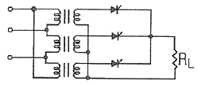
- 3상 브리지 정류회로
- 3상 전파 제어정류회로
- 단상 3배압 제어정류회로
- 3상 반파 제어정류회로
(정답률: 73%)
48. 철도 건널목 전동차단기 설치 시 조정에 해당되지 않는 사항은?
- 차단봉의 설치 방향
- Holding Device의 설치 방향
- 회로 제어기의 접점 동작위치
- 열차 도착 시까지의 Waiting Time 조정
(정답률: 62%)
49. NS형 전기선로전환기의 마찰클러치에 대한 설명으로 틀린 것은?
- 전동기가 회전 또는 정지할 때 기어(gear)에 충격을 주지 않도록 흡수한다.
- 첨단에 이물질이 끼거나 쇄정간이 걸릴 때 전동기를 보호한다.
- 강하게 조정하면 전동기가 정지할 때 충격이 크고 공전할 때는 슬립 전류가 크게 된다.
- 마찰클러치의 조정은 여름에는 약하게, 겨울에는 강하게 한다.
(정답률: 88%)
50. 변압기에서 역률 100%일 때의 전압변동률 ε, 퍼센트 저항강하를 p라 할 때 이들 사이의 관계는?
- ε≒p
- ε≒√p
- ε≒p/2
- ε≒p/√2
(정답률: 84%)
51. 접점수가 NR2/NR2 이고 정격전류가 125 mA, 선륜 저항이 4 Ω, 사용전압이 0.5 V 인 계전기는?
- 직류 단속계전기
- 직류 궤도 연동계전기
- 직류 유극 선조계전기
- 직류 무극 궤도계전기
(정답률: 64%)
52. 전기 선로전환기의 전환을 직접 제어하는 계전기는?
- WR
- HR
- ZR
- TR
(정답률: 83%)
53. 수은 정류기 이상 현상 또는 전기적 고장이 아닌 것은?
- 역호
- 이상전압
- 점호
- 통호
(정답률: 71%)
54. 단상 변압기의 1차 전압이 2200V, 1차 무부하 전류는 0.088A, 무부하 철손이 110W라고 하면, 자화전류는 몇 A인가?
- 0.0624
- 0.0724
- 0.0824
- 0.0924
(정답률: 61%)
55. 회전기의 정격 중에서 전기 철도용 전원 기기에만 적용되는 정격은?
- 공칭 정격
- 단시간 정격
- 반복 정격
- 연속 정격
(정답률: 79%)
56. 신호기기 총괄표의 기재 사항이 아닌 것은?
- 종별, 형식, 정격
- 제조자명, 제조년원일, 제조번호
- 구입년도, 설치년원일, 설치장소
- 검사자, 구매자, 설치자
(정답률: 87%)
57. 24V, 50A가 정격인 정전압 정류기가 있다. 이 정류기에 흐르는 정류기의 역류는 몇 A 이하로 유지하여야 하는가?
- 2.5A
- 0.25A
- 0.025A
- 0.0025A
(정답률: 60%)
58. 철도건널목 제어기기 중 경보시점에 설치하는 것은?
- ST형
- SC형
- DC형
- C형
(정답률: 82%)
59. 교류 NS형 전기선로전환기 장치 내부에 없는 것은?
- 제어 계전기
- 회로 제어기
- 전철제어 계전기
- 유도 전동기
(정답률: 85%)
60. 출력 1kW, 효율 80%인 기계의 기계적 손실은?
- 100W
- 200W
- 250W
- 800W
(정답률: 58%)
4과목: 신호공학
61. 운전 시격에 대한 설명으로 맞는 것은?
- 1일 최대의 열차 운용 횟수
- 선행 열차와 후속 열차간의 상호 운행 간격
- 1시간 동안 운행 할 수 있는 최대 열차 수
- 선행 열차와 후속 열차간의 최소 운전 간격
(정답률: 75%)
62. 철도신호의 정지, 주의, 감속 및 진행신호를 현시하는 다등형 신호기의 도식기호는?
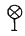
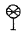
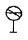
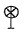
(정답률: 73%)
63. 다음 중 궤도회로의 불평형률은? ( UB: 불평형률[%], I1, I2 : 각 레일의 전류)
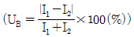
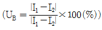
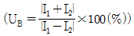
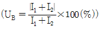
(정답률: 77%)
64. 국철 A.T.C 구간의 차량입환시 열차속도코드는 얼마인가?
- 25[km/h]이하
- 45[km/h]이하
- 65[km/h]이하
- 75[km/h]이하
(정답률: 75%)
65. 경부고속철도에 사용중인 UM71C형 무절연 궤도회로장치를 구성하고 있는 기기가 아닌 것은?
- 전압안정기
- 보상용콘덴서
- 동조유니트
- 매칭유니트
(정답률: 65%)
66. 열차 최고속도가 150km/h로 운행하는 선구에 건널목 경보시간을 30초로 할 때 적정한 경보제어거리는?
- 850m
- 1000m
- 1250m
- 1450m
(정답률: 86%)
67. 경부고속선 열차제어시스템(TCS)의 구성요소가 아닌 것은?
- ATO(열차자동운전장치)
- CTC(열차집중제어장치)
- IXL(전자연동장치)
- ATC(열차자동제어장치)
(정답률: 60%)
68. 진로쇄정을 진로구분쇄정으로 설치하는 목적으로 맞는 것은?
- 보안도를 향상시킨다.
- 역구내 운전 정리 작업의 효율을 증대시킨다.
- 시설비를 크게 절감하기 위함이다.
- 열차의 안전운행을 도모시키기 위함이다.
(정답률: 81%)
69. 전차선 절연구간 예고지상장치에 대한 설명으로 틀린 것은?
- 송신기와 지상자의 간격은 20m 이내
- 취부위치는 점제어식 자동열차정지장치에 준하여 설치
- 송신 주파수범위는 68kHz ± 68Hz
- 입력측 전원전압은 AC 110 ± 10V(60Hz)이하
(정답률: 64%)
70. 철도건널목 신호분석장치의 저장정보 및 출력내용이 아닌 것은?
- 경보제어시간 및 경보시간 정보
- 수동으로 차단기 조작시간 정보
- 지장물검지장치 작동정보
- 제어구간 궤도회로 송, 착전 전압정보
(정답률: 64%)
71. 열차자동방호장치(ATP)의 정보전송장치 설치조건으로 거리가 먼 것은?
- 열차진행방향에서 가변정보전송장치, 고정정보전송장치 순서로 설치하여야 한다.
- 텔레그램 입력 후 습기가 유입되지 않도록 흰색 봉인 플러그를 접속하여야 한다.
- 연속된 2개의 정보전송장치는 3[m] 이상거리를 두고 설치하여야 한다.
- 침목을 중심으로 가로방향으로 설치하는 것이 표준이다.
(정답률: 69%)
72. 경부고속철도(KTX)에 설치된 전자연동장치(SSI)의 큐비클 내 구성기기가 아닌 것은?
- 불연속전송모듈(CEP)
- 진단모듈(DIA)
- 다중처리모듈(MPM)
- 조작표시반 처리모듈(PPM)
(정답률: 65%)
73. 건널목경보기 2440형의 발진주파수 범위는?
- 20kHz±2kHz 이내
- 25kHz±4kHz 이내
- 40kHz±2kHz 이내
- 45kHz±4kHz 이내
(정답률: 79%)
74. 신호기 중 비자동구간 장내신호기 외방 400[m]이상의 지점에 설치하며, 장내신호기의 확인거리를 보충해 주는 신호기는?
- 통과 신호기
- 유도 신호기
- 원방 신호기
- 폐색 신호기
(정답률: 79%)
75. 경부고속철도에서 하나의 궤도회로 송신기와 수신기 케이블 길이가 동일하게 구성되도록 전류를 감쇄시키기 위하여 사용되는 것은?
- 감쇄기
- 매칭 유니트
- 거리 조정기
- 방향 계전기
(정답률: 79%)
76. 신호검측차로 측정할 수 없는 것은?
- AF궤도회로의 반송파전류
- 임펄스 궤도회로의 전압
- ATS장치의 선택도(Q)
- 건널목 장치의 조명의 밝기
(정답률: 86%)
77. 경부고속철도에서 열차의 운행방향에 따라 궤도회로를 조정하는 장치는?
- 거리 계전기
- 방향 계전기
- 거리 조정기
- 송신기
(정답률: 74%)
78. 역간 열차 평균 운전시분이 7분이고 폐색 취급 시분이 5분일 경우 단선구간의 선로용량은? (단, 선로이용률은 0.75임)
- 60회
- 75회
- 90회
- 120회
(정답률: 87%)
79. 철도신호보안장치의 사고를 방지하기 위해 안전측 동작(Fail-safe)의 원칙을 적용하고 있는데, 이에 해당하지 않는 것은?
- 폐전로 방식으로 회로를 구성
- 회로의 조건을 한선에 넣어 제어회로 구성
- 제어접점이 낙하하면 전원을 차단함과 동시에 계전기의 양단을 단락하도록 구성
- 교류 궤도계전기는 정해진 위상 이외의 미류에 대해 오동작되지 않도록 위상제어방식으로 구성
(정답률: 83%)
80. 신호장에 가까이 있으며 많은 철관 장치의 방향을 바꾸기 위하여 설치되는 것은?
- 디플렉션 바
- 직각 크랭크
- 파이프 콤펜세이터
- T 크랭크
(정답률: 80%)